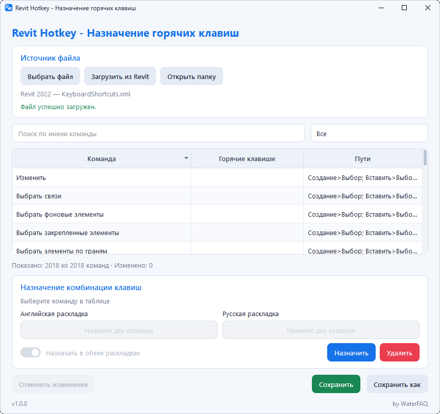

Поиск и фильтры
Поиск по названию команды и фильтрация по разделам, назначенным и свободным сочетаниям.
Найдите нужную команду и назначьте сочетание сразу для английской и русской раскладок.

Поиск по названию команды и фильтрация по разделам, назначенным и свободным сочетаниям.
Программа определяет физические клавиши и формирует соответствующие сочетания EN и RU.
Занятое сочетание показывается до сохранения. Его можно заменить осознанно, не редактируя XML вручную.
При перезаписи файла Revit исходный XML сохраняется рядом с отметкой даты и времени.
Итоговый файл сначала создаётся и проверяется как временный XML, затем заменяет оригинал.
Программа находит пользовательские файлы разных версий Revit и позволяет выбрать нужный.
Revit Hotkey не отправляет команды, сочетания или XML-файлы в интернет. Программа работает непосредственно с выбранным локальным файлом.
Программа не использует Revit API и работает с пользовательским файлом горячих клавиш. Автоматический поиск ориентируется на стандартные папки «Autodesk Revit 20XX».
Нет. Распакуйте архив и запустите Revit Hotkey.exe.
При перезаписи стандартного файла Revit рядом создаётся резервная копия. Сохранение выполняется через проверенный временный XML.
У программы нет цифровой подписи, поэтому Windows может предупредить о запуске приложения от неизвестного издателя.
Revit Hotkey v1.0.0 · портативная версия для Windows.